How to grind your Casio fx-115ES shell so the AI-calculator board, camera, battery and magnet connector fit. Three jobs on the back cover (zones 1–3), the magnet notch on the front shell (zone 5), the side-wall jobs on the front shell (zones 6 and 6b), and two "only if your shell needs it" jobs (5b and 6c). Zone 4 (the LR44 cup) is kept, not ground. Every zone below has: why it's needed, the exact numbers, the tool, diagrams, steps with depth-rod checks, how to know you're done, and the usual mistakes. Go slowly: you can check every step with your calipers before you go further.
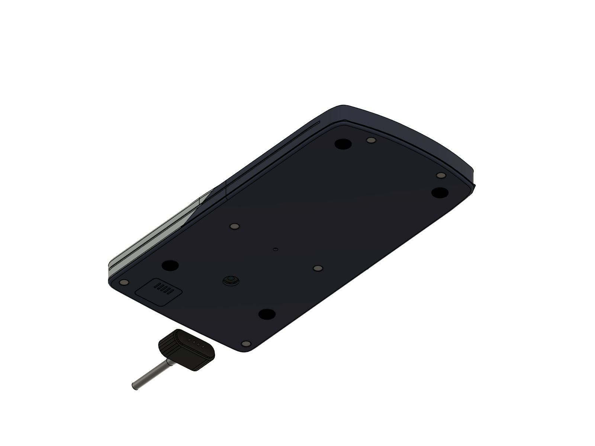
What you are working towards: the finished calculator from the back (3D model).
Read this first
The back-cover floor is only about 1.0 mm thick (your reading D5). You may never go below 0.8 mm. That leaves you just 0.2 mm of room for mistakes when you grind things "flat to the floor". Aim to stop at the floor, never into it.
The map: what comes off, on your own shell
These are your photos with the zones drawn on. Red = remove. Orange = only if your shell needs it. Green = leave alone. The positions on the photos are rough (the camera looks at the shell at an angle); the printed grind maps and your calipers decide the exact spots.
removeonly if neededleave / keep clear
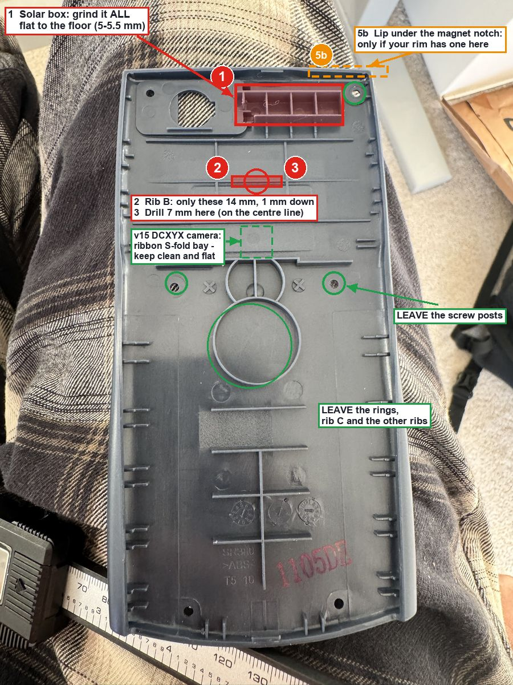
Back cover, inside up, top end away: zones 1, 2, 3 and 5b. Leave the posts and rings; keep the v15 camera bay clean.
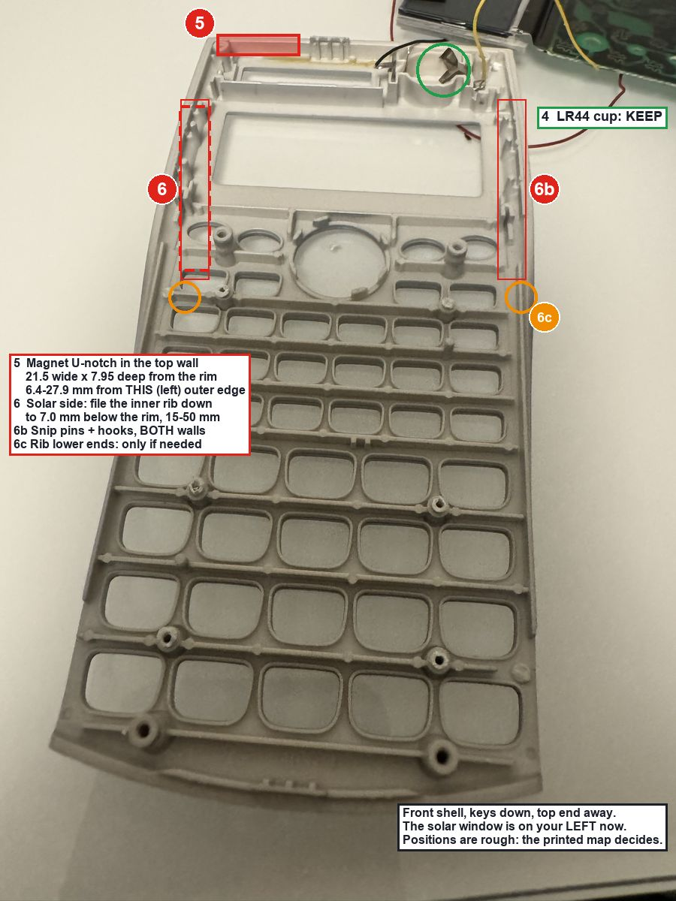
Front shell, keys down, top end away: zones 5, 6, 6b, 6c. The solar window is on your left in this view.
The same two parts from the 3D model, straight on from the inside, with every zone numbered. In these four pictures the calculator's top end is on the right (turn your phone sideways). Before: red = what comes off. After: green outline = where it was. The 10 mm bar in the corner is to scale.
Back cover, before: 1 solar box, 2 the 14 mm of rib B, 3 the camera window, 5b the lip (only if yours has one).Back cover, after: flat floor where the solar box was, the gap in rib B with the hole in its middle.
Front shell, before: 5 the magnet U-notch, 6 the side-wall relief, 6b pins and hooks on both walls, 6c rib ends (only if needed). The round LR44 cup stays.Front shell, after: notch open in the top wall, rib relieved, pins and hooks gone, everything else untouched.
What you'll need
Cutting
Rotary tool with a speed dial (a Dremel or any similar tool). Cordless is fine.
Carbide burr, about 3 mm, cylinder or ball shape (1/8″ shank): for taking most of the solar box down and for the magnet notch. Carbide cuts plastic cleanly at low speed; the grey stone bits melt it.
Sanding drum, small (about 6 mm), the finest grit you have (120 or finer): for the last few tenths, to get the ground spots flat and smooth.
Drill bits:2 mm pilot, and 7 mm (a 9/32″ bit is 7.1 mm: fine), or a step drill. A 7 mm bit won't fit a rotary-tool collet: use a hand drill or a drill press.
Flush cutters (the small electronics side-cutters with one flat face): for the pins and hooks (zone 6b).
Needle files: flat and half-round. A flat sanding stick (sandpaper glued on a lolly stick) works too.
Measuring and marking
Calipers with a depth rod (the thin rod that slides out of the end). Digital is easiest.
A thin steel ruler, to lay across the rim as a reference for depth readings.
Fine permanent marker.
Masking tape to protect surfaces you are not cutting, and Kapton tape (it doesn't melt).
The two printed grind maps at 100 % (see "Templates" below), and the 3D-printed dummy board if you have it.
Holding and safety
Safety glasses and a dust mask (FFP2 / N95).
A vise or clamp, with a rag or wood between the jaws so the shell isn't scratched or cracked.
A spare shell to practise on.
Zone
Main tool
Finish with
Speed
1 solar box
3 mm carbide burr (or jig A + router bit)
sanding drum, then a flat sanding block
5–10k RPM
2 rib B
sanding drum (burr if slow)
flat sanding block / scraping blade
5–10k RPM
3 camera window
2 mm pilot, then 7 mm in a hand drill
half-round needle file / sandpaper
slow drill
5 magnet notch
3 mm carbide burr (or jig B + razor saw)
flat needle file
5–10k RPM
5b lip
burr or flush cutters
flat needle file
5–10k RPM
6 rib relief
flat needle file (by hand)
sanding stick
hand
6b pins + hooks
flush cutters
needle file
hand
6c rib ends
flat needle file
—
hand
Speed: about 5,000–10,000 RPM
Plastic melts long before it cuts cleanly at high speed. Use the low end of your tool's dial: about 5,000–10,000 RPM. If the dial is printed in thousands (5–35), set it to 5–10. If it is numbered 1–10, start at 1–2 and check your tool's manual for the RPM of each setting. If the plastic smears, strings or goes shiny and soft, you are too fast or pressing too hard: stop, let it cool, slow down. (General rotary-tool advice, not a number from our model; trust what the plastic shows you.)
How to hold the tool. A burr cuts with its side, held at 30–45°. A sanding drum rides flat, like a rolling pin. Never push the tip straight down into the floor: that drills a pit.
Templates
Two 1:1 maps live in the repo at hardware/fitcheck/:
grind_map_back_cover.svg: lay it in the back cover, inside up. It is printed mirrored on purpose.
grind_map_front_shell.svg: lay it in the front shell (keys down), printed side up. Cut it out with its yellow antenna tab.
Print each from a browser at 100 % / actual size, then measure the 50 mm line on the sheet with your calipers. If it isn't 50 mm, the print is scaled: fix the print settings before you trust it. Cut along the outline and lay it in the shell. The red dashed shapes are what to grind.
Jigs (optional, faster and the same every time)
3D-printed jigs in hardware/enclosure/jigs/ (print in PETG if you can; PLA softens where the bit rubs): A back-cover plate (zones 1 + 2, holds A2), A2 camera drill bush (zone 3 pilot), A3 7.2 mm depth gauge (sets the router bit), B magnet-notch saddle (zone 5 + 5b). There is no jig for zones 6, 6b, 6c: they are file and cutter jobs.
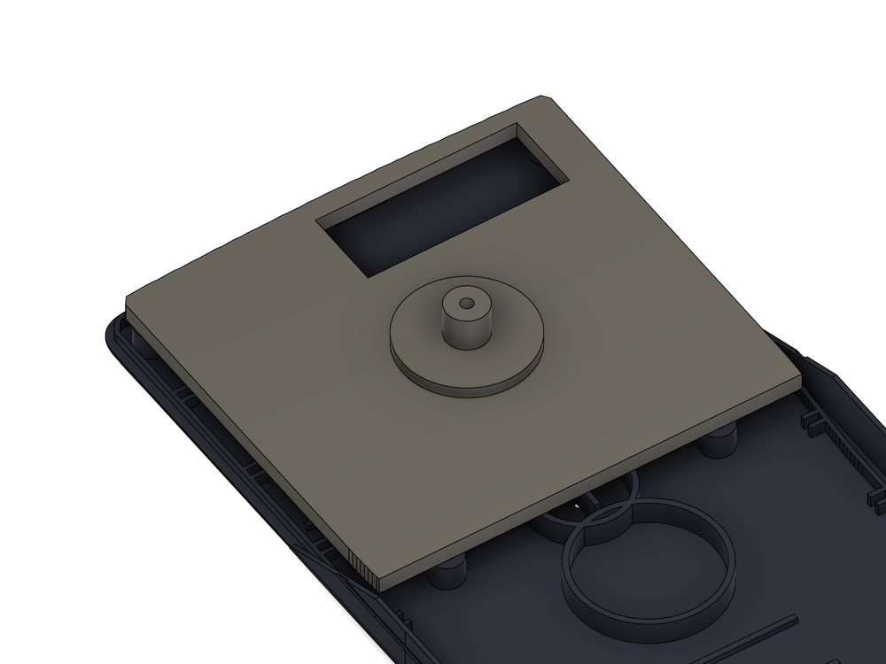
Jig A on the back cover: the window is exactly zone 1; the 16 mm hole covers zone 2 and holds the A2 drill bush.
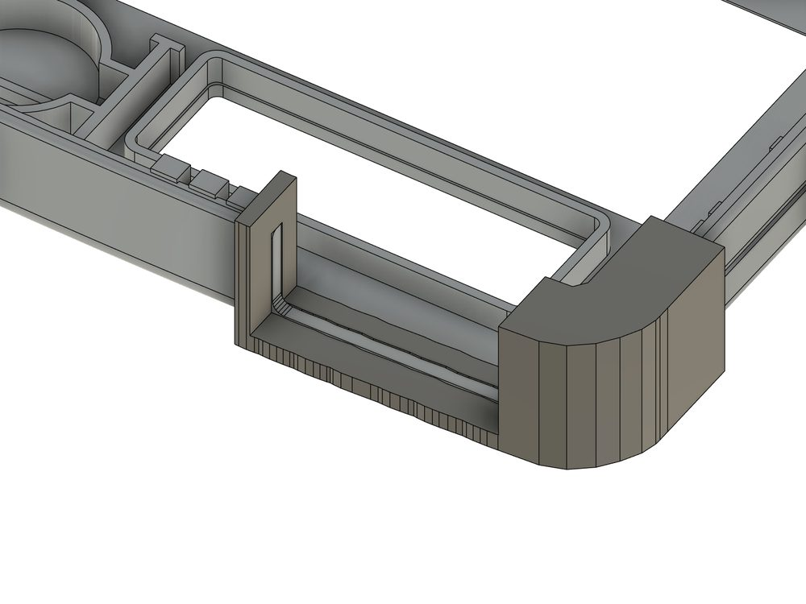
Jig B on the top wall: its window is the U-notch, 21.5 × 7.95 mm. It sets the position by itself.
Safety
Glasses on before the tool is plugged in. Bits shatter and hot chips fly.
Mask on. Plastic dust and the smell of hot ABS are not good to breathe.
Ventilation: work by an open window or with a fan blowing the dust away from you (not into your face). Vacuum the bench afterwards rather than blowing the dust around the room.
Clamp the part. Never hold a small shell in your hand while grinding near your fingers. Soft jaws (rag, wood) and only light clamping pressure: the shell cracks if you squeeze it.
Melting plastic = too fast. Smoke, a sharp smell, shiny strings or a blob building up on the bit all mean: stop, let it cool for a minute, turn the speed down, press lighter.
Let the tool stop before you put it down. Unplug it when you change bits.
Loose sleeves, hair and cords away from the bit.
Ground plastic and the bit get hot. Touch them only after they have cooled.
No electronics near the shell while you grind. The board goes in only after the shell is washed or blown clean.
How to measure (you will do this a lot)
Almost every step below says depth rod. This is how. You lay a steel ruler across the rim, so you have a flat bridge to measure down from, and you use the calipers' depth rod to measure how far down the plastic is. You never need the absolute number for "flat to the floor": you only compare two readings taken the same way.
The "ruler across the rim" method. First measure the bare floor next to the feature: that is R. Then measure over the feature: F. Keep going until F = R.Taking one reading with the depth rod.
The ruler's thickness
If the calipers' end sits on top of the ruler, every reading includes the ruler's thickness t (measure it once with the jaws; usually 0.5–1.0 mm). For "same as the floor" checks (zones 1, 2) that doesn't matter: both readings include it. For a target like "7.0 mm below the rim" (zones 6, 6c), subtract t, or rest the calipers' end directly on the wall's own rim. Measure the same way you did when you got your 4.5–5.0 readings on 2026-10-06, and write down which way that was.
What "done" looks like in cross-section. A stub you can barely feel is still too much near J4; a dip into the floor makes it thin and weak.
Golden rules
Low speed (5,000–10,000 RPM), light pressure. Let the bit do the work.
Short passes. A few seconds, lift off, look.
Measure every 30 seconds. Blow the dust off, take a depth reading, then decide.
Never grind into the floor. Keep at least 0.8 mm of plastic everywhere (it starts at about 1.0).
Never touch the screw posts, the locating posts (pegs), the snap clips, the outer walls, the window frame or the key holes. Mask them with tape so a slip only scuffs tape.
Plastic melts. If it gets soft or shiny, stop and let it cool for a minute.
Practise on the spare shell first. Do one full zone there before you touch the real one.
Locating posts: hands off
Locating post H6 has only 0.10 mm of room in the board's hole. Don't grind or file any post. If the real board binds on H6, file the hole in the board a little towards the top of the board, never the post.
Order of operations
Do them in this order: each "before" picture already shows the earlier grinds done.
1Solar box flat to the floor back covergrind
2Rib B flat over the camera, 14 mm back covergrind
3Camera window, Ø 7 mm (only once the camera and its ribbon route are decided) back coverdrill
4LR44 coin-cell cup front shellnot needed
5Magnet U-notch in the top wall front shellcut
5bBack-cover lip under the magnet notch back coveronly if there
6bSnip the 3 round pins and the 3 wire hooks off the inner rib, both side walls (do this before 6) front shellsnip
6Side-wall relief: notch the inner side-wall rib 2–2.5 mm deep (to 7 mm below the rim), 14–49 mm from the shell's own top outer edge at that wall, solar-window side front shellfile
6cLower end of the inner ribs where the board widens front shellonly if the paper's wide corners ride up
Before any of this (10 minutes, real shell in hand): do the pre-grind checklist in hardware/verification/07_final_review_fitment.md §3: it measures the few things the 3D model only guessed (inner-rib depth, solar-frame strip, floor thickness at the moulded label, lip, screw length) and tells you whether zone 5b applies to your shell. Zones 6 and 6b are settled (depth rod 2026-10-06, hardware/verification/12_rib_pin_recheck.md): the rib, pins and hooks all sit at board height on both walls.
The big ring on the back cover does not need grinding (D2 and C16 clear it). Leave all other ribs alone.
How long it takes
Per unit, once you've done one. Your first shell will take about twice as long; add 10 minutes for the pre-grind checklist and time for a practice zone on the spare shell.
Zone
Freehand
With jigs
1 solar box
8–12 min
3–4 min (jig A)
2 rib B
2 min
0.5–1 min (jig A)
3 camera window
4–5 min
1–1.5 min (jig A2)
5 + 5b magnet notch (+ lip)
10–15 min
4–5 min (jig B)
6b pins + hooks
2 min
2 min (no jig)
6 rib relief
3–5 min
3–5 min (no jig)
6c rib ends (only if needed)
2–3 min
2–3 min (no jig)
Total
≈ 30–44 min
≈ 15–21 min
Zones 1, 2, 3, 5 times are from hardware/enclosure/jigs/README.md; 6, 6b from verification 12; 6c is an estimate. Plus the test fit (paper, dummy board): about 10 minutes.
Zone 1 · back covergrind
Solar box: flat to the floor
Why (what would hit): the box of thin walls (a frame with a grid inside) that hangs down from the back cover sits right over the battery socket J4, the magnet header J3 and the power parts. Without this grind J4 runs 4.6 mm into it and the cover can't close. It is also where the end of the LiPo will lie.
Size
≈ 33 × 12 mm
Height to remove
5–5.5 mm (D6, D13)
Target
Flush with the floor, no stub
Floor left
≥ 0.8 mm (≈ 1.0)
Bits
3 mm carbide burr, then sanding drum
Speed
5,000–10,000 RPM
Top view (inside of the back cover). Everything red goes, frame and grid.Cross-section. After the grind J4 has only 0.41 mm to the floor, so the floor must be clean and flush.
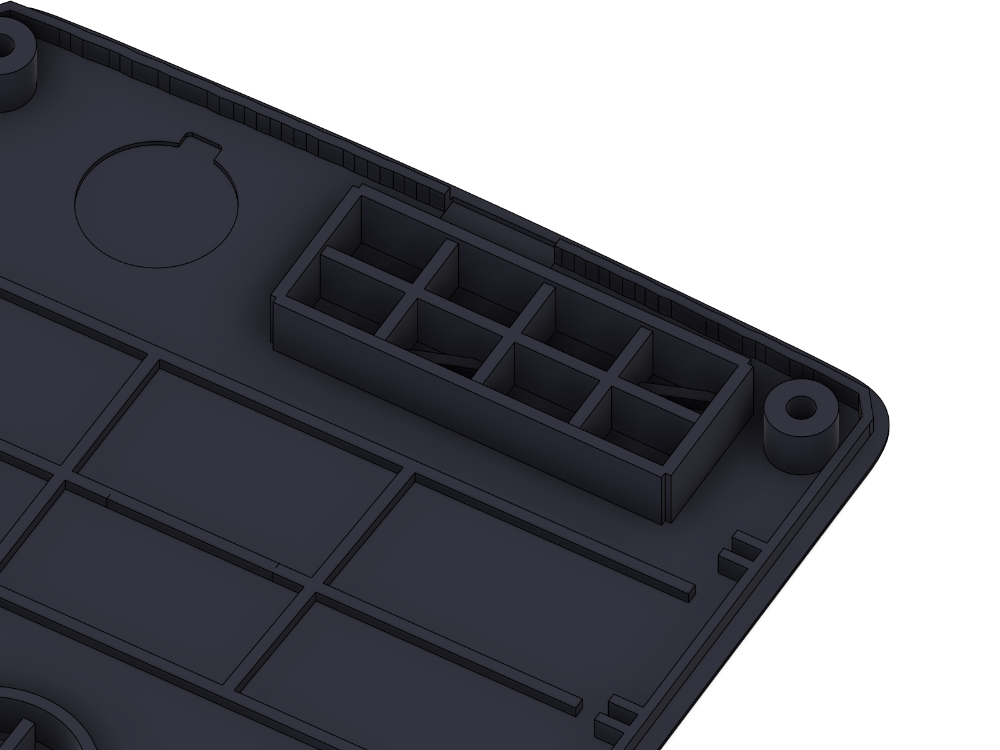
Before: the walled grid box. Note the corner screw post right next to it.
You can't miss it: it's the only box with a grid inside, near the top end of the back cover, beside a corner screw post (top right with the cover inside up and the top end away from you). From the model, its outer frame runs about 6.3 to 19.3 mm down from the back cover's own top outer edge (the outside-face edge, the same datum as the camera hole's 38.0 mm), measured straight down at the middle of the box; because the top edge curves down towards the corners it reads 5.8–18.8 mm at the screw-post end and 6.4–19.4 mm at the far end. Its near end is about 9.9 mm in from the nearest side edge (outside face). Confirm with the back-cover template ("GRIND 1").
Steps (freehand)
Mask the corner screw post and the outer wall next to the box with tape. Clamp the cover inside up, soft jaws, light pressure.
depth rodReference reading R. Ruler across the rim over the box; rod down to the bare floor next to the box. Write R on the tape.
Burr at 30–45°, 5,000–10,000 RPM. Take the grid walls down first, then the outer frame, a little at a time, working across the whole box so it goes down evenly. Think "lawnmower", not "drill".
depth rod Every 30 seconds: blow off the dust and measure at 4–5 spots over the box. While F is smaller than R, plastic is still standing.
When the walls are about 0.5 mm above the floor (F ≈ R − 0.5), switch to the sanding drum, held flat, and finish gently.
depth rod Final check on a grid: four corners, the middle, and especially the end nearest the screw post (where J4 sits). Every reading = R (± 0.05).
Fingernail test across the old walls: no ridge.
With jig A: drop A in (pins into the 4 boss holes), set a 3.2 mm flat-end router bit with gauge A3 (7.2 mm below the base), run the router inside the window with the shank against the window wall, remove A, then sand the last 0.2 mm skin flat with a sanding block.
Done when
Every reading over the old box equals R (the floor next to it), and you can't feel a ridge with your fingernail. Stop the moment the readings match. Going past R means you are into the floor.
No stub
After this grind, J4 (the battery socket) has only 0.41 mm to the floor. A 0.5 mm stub left behind would hit it. It must be properly flush.
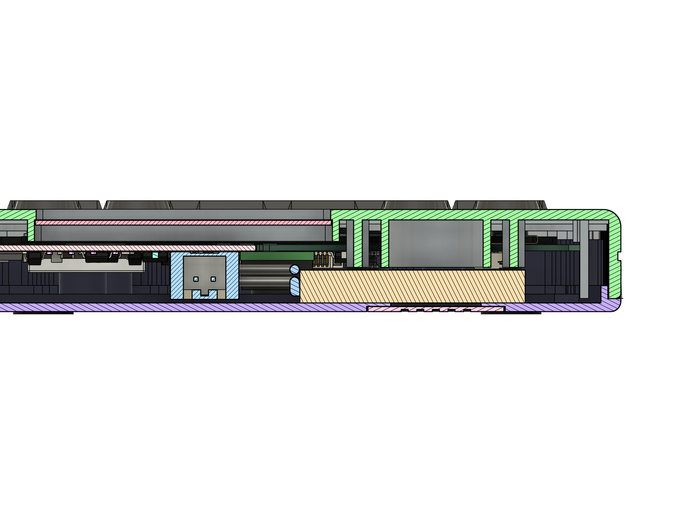
Cut through J4, its plug and the LiPo: the reason there can be no stub.
Common mistakes
Grinding one corner of the box all the way down first and then gouging the floor next to it. Work the whole area down evenly.
Leaving the frame's base "almost flat". It has to be flush.
Catching the screw post with the side of the burr. Tape it and keep the burr pointing away from it.
Too much speed: the walls melt and fold over instead of cutting. Slow down.
Pushing the burr's tip into the floor at the end of a pass: it leaves little pits. Lift off before you reverse.
Zone 2 · back covergrind
Rib B over the camera: 14 mm flat
Why (what would hit): the camera module is 5.4 mm tall and this 1 mm rib runs right across it; without the grind the lens hits the rib by about 0.5 mm and the camera can't sit flat over its window. Only the middle 14 mm of the rib comes off. The rest of rib B stays.
Length
14 mm, centred (7 + 7)
Height to remove
1 mm
Target
Flush with the floor
Floor left
≥ 0.8 mm (≈ 1.0)
Bits
Sanding drum (burr if slow)
Speed
5,000–10,000 RPM
Top view. Red: the 14 mm that comes off. Orange: the v15-LCD extra, only if the LCD tail's bow is squeezed (see the v15 section).Cross-section along the rib: the camera lens sits right over it.
The camera window's centre is on the centre line of the cover's width (measure the full width, halve it), 38.0 mm down from the back cover's own top outer edge, measured along that centre line (from the model; zone 3, "Measuring the drill point", says why older notes said 38.3). Rib B is the middle one of the three long ribs below the solar box; it runs across the cover right there. Mark the centre point on the rib, then mark 7 mm each side of it: that's your 14 mm. The back-cover template shows it as "GRIND 2".
Steps
Before you start: pre-grind check 4 (floor thickness at the moulded label outside, 32–48 mm down from the back cover's own top outer edge). ≥ 0.9 mm: grind flush as below. 0.8–0.9: stop 0.1–0.2 mm proud. Under 0.8: use the spare cover.
Measure the width, halve it, mark the centre on rib B. Mark 7 mm each side. Lay the template in and check the marks agree.
depth rod Reference reading R on the floor next to the rib.
Sanding drum held so it rides along the rib (axis across the rib), 5,000–10,000 RPM, between your marks only. Short passes.
depth rod Every 30 seconds: measure at both ends and the middle of the 14 mm. Stop when F = R everywhere.
Square the two cut ends with a needle file. Fingernail across: no ridge.
With jig A: router inside the Ø16 hole across the rib (it takes 16 mm instead of 14: fine), then scrape the last 0.2 mm off with a flat chisel blade so the camera sits flat.
Done when
The 14 mm stretch reads the same as the floor beside it, at both ends and in the middle. Leave your two marker lines visible: they show you where the camera goes.
Common mistakes
Grinding the whole rib instead of just 14 mm.
Getting the centre wrong. Measure twice and cross-check with the template before you start.
Rounding the floor next to the rib with the edge of the drum. Keep the drum flat and only on the rib.
Touching the 4 mm "mid rib" or the rings further down: the camera ribbon passes over them with half a millimetre to spare, but they don't need grinding. Leave them.
Zone 3 · back coverdrill
Camera window: drill Ø 7 mm
Why: the camera looks out of the back. Nothing hits here; this hole is the camera's view. The lens does not need to poke into the hole. It is the one cut you can't undo, so it waits until the camera and its ribbon route are decided (the ribbon length sets exactly where the module sits).
Hole
Ø 7 mm (9/32" OK)
Centre
On rib B's centre mark, width centre line
Board ref.
KiCad (150, 95.1)
Tools
2 mm pilot, then 7 mm in a hand drill (or step drill)
Speed
Slow drill, light pressure
Do after
Zone 2
Seen from the outside: tape, pilot, then the 7 mm hole on the centre lines.The three steps, with a scrap block of wood underneath so the bit has something to go into.
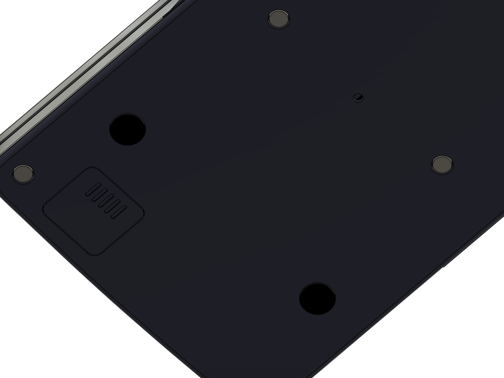
Outside, before.Outside, after: one round 7 mm hole.
Where to drill, seen from the outside (top end up): 38.0 mm down from the back cover's own top edge, on the width centre line (39.3 mm from each side in the model = half of its 78.7 mm).
Measuring the drill point (which edge, which number)
The hole centre comes from the board: the camera's centre is at KiCad (150, 95.1). The model turns board numbers into shell numbers with X = 150 − x and Y = 138.94 − y (build_final_assembly.py), so the hole is at X = 0 (the width centre line) and Y = 43.84 mm above the shell's middle.
Top distance: measure from the navy back cover's own top outer edge, along the centre line: 38.0 mm. In the model that edge is at Y 81.79, and 81.79 − 43.84 = 37.95. This is the number to use with the cover off the calculator, which is how you drill it.
Older notes said "about 38.3". That was measured to Y 82.1, the top of the whole calculator's outline, where the silver front shell's top wall stands about 0.3 mm beyond the navy cover's edge. Same hole, different edge. Don't use 38.3 on the loose back cover.
Side distance: half of your cover's width, measured at the same height. The model's cover is 78.7 mm across there, so 39.3 mm from each side. Your shell may differ by a few tenths, so measure it and halve it; the two side readings must match (the 7 mm hole has only about 0.7 mm to spare round the lens).
Measure to the outer edge, with the caliper square to that edge.
Cross-check from the inside: the point must land in the middle of the 14 mm gap in rib B. If the outside number and the gap disagree by more than 0.5 mm, stop and find out why before drilling (both come from the same model point).
Steps
Find the centre on the inside: the middle of your 14 mm marks on the ground rib, on the width centre line. Check it against the template. calipers measure from both side edges: the two numbers must match.
Push a pin or the point of a scriber through to make a small dent at the centre.
Clamp the cover on a scrap block of wood so the drill has something to go into. Put masking tape on the outside where the hole will come out (less chipping).
Drill the 2 mm pilot first, straight up and down (or through the A2 bush in jig A).
Open it to 7 mm with the hand drill, slowly and with light pressure, or from the outside with a step drill (it centres on the pilot). Plastic likes to grab a big bit just as it breaks through: ease off at the end.
Deburr both edges with a half-round needle file or a fingertip of sandpaper. Don't make the hole bigger.
calipers Inside jaws: 7.0–7.1 mm in two directions (round, not oval).
Done when
The hole is round, 7 mm across in both directions (calipers' inside jaws), centred on the marks and clean on both sides.
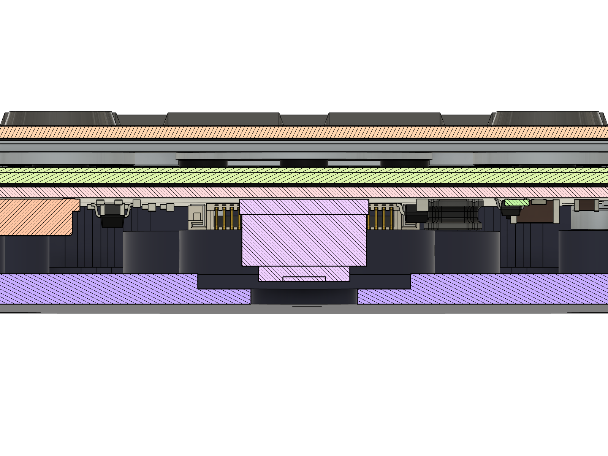
Cut through the camera: the lens sits just under the window, with 0.71 mm to the hole's edge.
v15 with the DCXYX camera
The recommended route keeps this hole exactly where it is (the ribbon's extra length goes into an S-fold, see the v15 section). Only if the build uses the fallback "camera moved 8 mm" route does the window move: 8 mm towards the top end (centre about 30.0 mm from the back cover's own top outer edge, still on the centre line). That hole crosses the moulded label's top border outside (cosmetic only: pilot first). Confirm which route before you drill.
Common mistakes
Drilling straight in with the 7 mm bit: it wanders and grabs. Always pilot first.
Drilling at an angle. Keep the drill upright, or use a drill press.
Pushing hard as the bit breaks through: it grabs and cracks the floor round the hole. Ease off.
Drilling before the camera route is decided.
Later: mounting the camera on foam tape. Use thin tape only (≤ 0.1 mm) under the module, with Kapton on the board below it.
Zone 4 · front shellnot needed (optional)
LR44 coin-cell cup: skip it
Why it's skipped: the final assembly check moved the LiPo battery so it lies flat on the back-cover floor instead of against the front plate. In that position the cup's bottom is still 0.3 mm above the battery, so the cup can stay. Don't grind it.
The cup as it is: leave it like this.
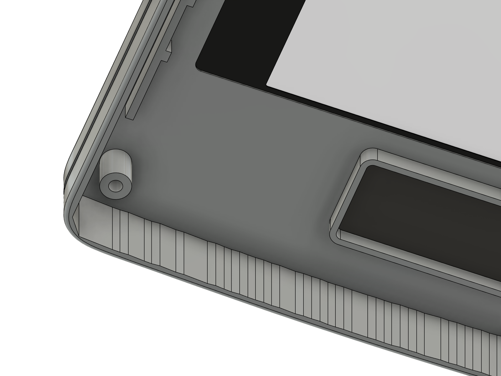
The old plan (trimmed flat). No longer needed.
What the new battery position needs instead
The solar-box grind (zone 1): the battery's end sits where the box was.
Hold the battery to the floor with thin (0.1 mm) double-sided tape. No foam: the coin-cell cup sits only 0.3 mm above the battery.
The battery lies over the old LR44 hole in the back floor. The battery lid still closes that hole.
Pre-grind check 3: if the cup is taller than 5.8 mm, the jig-C trim (battery upgrade study) is the fallback.
The front-shell map (regenerated 2026-10-06) now shows the cup in green with "zone 4 (KEEP)". If you still have an older print that says "LR44 cup: TRIM FLAT", throw it away and print the new one.
Zone 5 · front shellcut
Magnet slot: U-notch in the top wall
Why (what would hit): the magnetic charging connector's face (21 × 7 mm) sits flush in the top end wall. Without the notch it runs 1.0 mm into the wall. The notch is 21.5 mm wide, so there is 0.25 mm each side: glue fills that. It is a notch open at the rim, not a closed window: a closed window would leave a strip only 0.45 mm thick at the rim, which would break.
Width
21.5 mm
Depth from rim
7.95 mm
Through
the 1.2 mm wall
From right edge
6.4 → 27.9 mm
Bits
3 mm carbide burr, then flat needle file
Speed
5,000–10,000 RPM
Looking at the top wall from outside, shell face down, rim up. Red: the notch. Dashed: where the magnet's face will sit.Cut through the wall at the notch: the magnet sits in the opening, face flush with the outside.
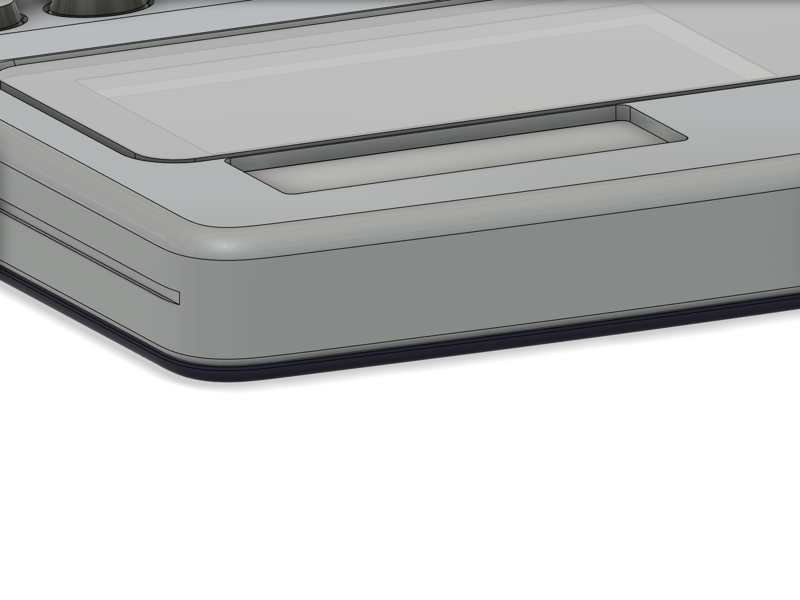
Before: solid top wall.
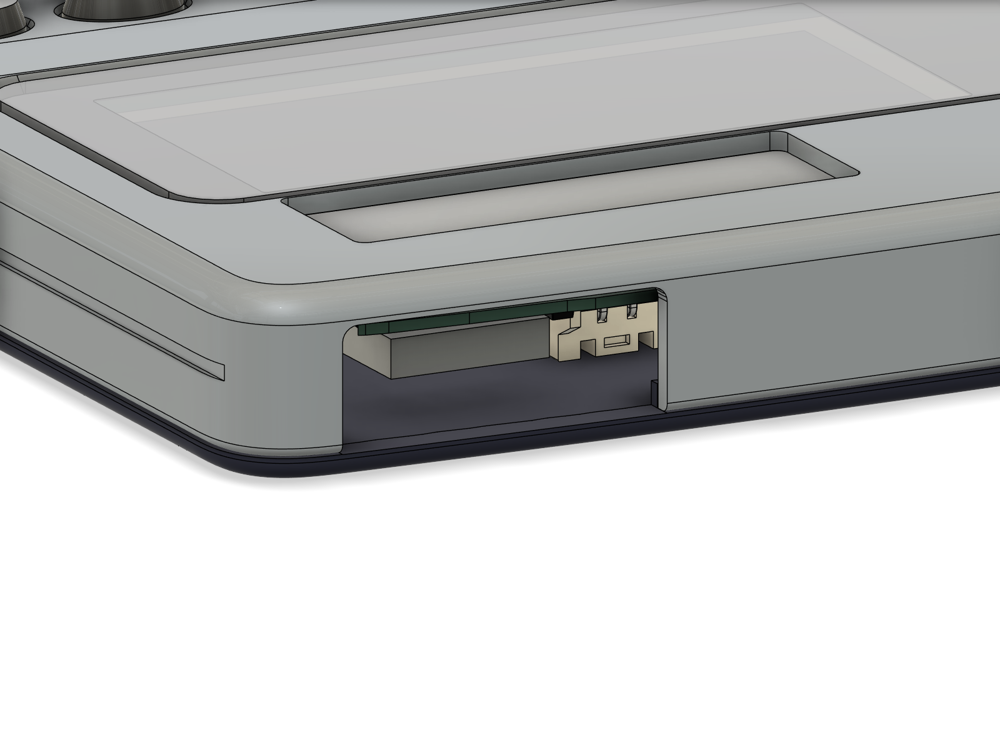
After: a U-notch open at the parting line, where the back cover meets the front shell.
The notch with its numbers, looking straight at the top end wall (display side down, rim on top): 21.5 wide, 7.95 deep from the rim, from 6.4 to 27.9 mm in from the right edge. Rounded inner corners of about 1 mm are fine.
Where
Hold the front shell display side up, top end away from you. On the top end wall, measure from the right-hand side edge: the notch runs from 6.4 mm to 27.9 mm in. That puts it on the same side as the solar window. (Turn the shell face down and look at the wall from outside, like the diagram, and it is still measured from the solar-window corner.) From the rim (the parting line, where the back cover sits) it goes 7.95 mm down towards the display face. Between the notch and the centre are the comb snap tabs: leave them.
Steps (freehand)
Tape the outside of the top wall. Draw the notch on the tape: two vertical lines at 6.4 and 27.9 mm from the solar-window side edge, and the bottom line 7.95 mm from the rim. depth rod against the rim to mark the depth at both ends.
calipers Check the marked width is 21.5 mm before you cut.
Clamp the shell with the top wall facing you, soft jaws, no squeezing on the display window. Tape the corner screw post behind the wall.
With the burr, cut inside your lines, starting at the rim and working down. Stay about 0.5 mm inside the lines.
Finish to the lines with the flat needle file. Keep the bottom edge straight and parallel to the rim.
calipers Width 21.5 at the rim and at the bottom; depth rod depth from the rim 7.95 at both ends.
When the magnet part arrives: its face should sit 0.45–7.45 mm below the rim, flush with the outside. Only glue it after the case closes and the face is flush.
With jig B: clip it over the top wall (shell face down; it wraps the right-hand top corner, so no measuring). Saw down both window edges with a fine razor saw to the window bottom, cut the bottom with flush cutters, file flat to the window's edge with light strokes, round the two inner corners (r 1).
Done when
The notch measures 21.5 mm wide and 7.95 mm deep from the rim, with clean square corners and a straight bottom edge. Too tight is easy to fix; too wide isn't, so creep up on the lines.
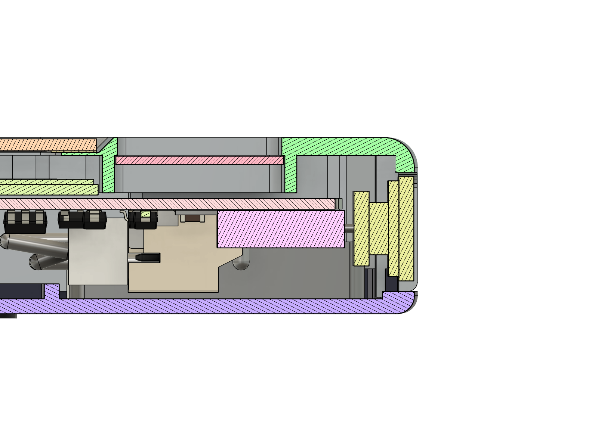
Cut through the magnet in its notch, legs pushed into header J3.
Common mistakes
Measuring from the wrong edge or with the shell the wrong way up. The notch is on the solar-window side.
Cutting to the line straight away with the burr. It always takes a bit more than you think: stay inside, then file.
Hitting the top-corner screw post behind the wall. It's close to the notch's outer end: tape it, keep the burr shallow.
A sloping bottom edge: the magnet then sits crooked. File it parallel to the rim, checking the depth at both ends.
Zone 5b · back coveronly if there
Back-cover lip under the magnet notch
Why (what would hit): our 3D model guessed a 1.5 mm locating lip round the back cover's rim (it was never measured). If your back cover really has a lip where the magnet sits, the magnet body hits it by about 0.5 mm and the cover won't close over the magnet. Pre-grind check 5 tells you.
Width
21.5 mm, in line with the notch
Where
6.4 → 27.9 mm from the solar-side edge
Down to
level with the back cover's rim
Tools
burr or flush cutters, then flat needle file
Speed
5,000–10,000 RPM (or by hand)
Time
≈ 0.5–2 min
Side cut at the notch: a lip hanging down from the back cover would sit right where the magnet's top edge is.
Look at your back cover's rim at the top end, on the solar-box side (top right with the cover inside up, top end away). No raised lip there? You're done with this zone.
If there is one: put the back cover on the notched front shell and mark the lip with the marker through the notch, on both sides.
calipers Check the marks are 21.5 mm apart and line up with the notch.
Take the lip off between the marks, down to the back cover's rim: burr, or two snips with flush cutters, then file. Don't touch the outer wall.
Close the halves without the magnet: the cut must sit right behind the notch.
Done when
The marked stretch of lip is level with the rim and 21.5 mm wide, lined up with the notch, and the halves still close with no gap.
Common mistakes
Cutting the lip on the wrong end or side: always mark it through the notch with the halves together.
Cutting the outer wall of the back cover instead of the lip: the outside would then show a gap.
Zone 6b · front shell · do before 6needed
Snip the 3 round pins and the 3 wire hooks off the inner rib, on BOTH side walls
Why (what would hit): the depth rod (2026-10-06) put the round pins 5.1–5.5 mm (outer two) and 6.0–6.1 mm (middle) below the rim and the U-shaped wire hooks at 5.5 mm; the board occupies 5.5–6.3 mm. So every pin and hook is at board height. On the J2 side their tips are 0–0.5 mm from the board's edge (the paper edge runs through the pin bosses in your photo); on the solar side the two upper hooks sit 1.1–1.4 mm inside the board's top corner and the pins reach 1 mm into the antenna tab. They held Casio's solar-cell wires; nothing of ours runs along those walls (the LiPo leads go straight into J4). Verification 12, hits 1–5 and 8–11.
Where
both screen-section side walls: 3 round pins (25, 34, 44 mm from the shell's own top outer edge at that wall) and 3 hooks (16, 21 and 55–58 mm; the lowest is the wider wire holder)
What
cut each pin and hook off flush with the rib it grows from
Leave
the rib itself (zone 6 only notches it on the solar side), the posts, the snap tabs
Tools
flush cutters; a needle file for the stubs
Time
≈ 2 minutes
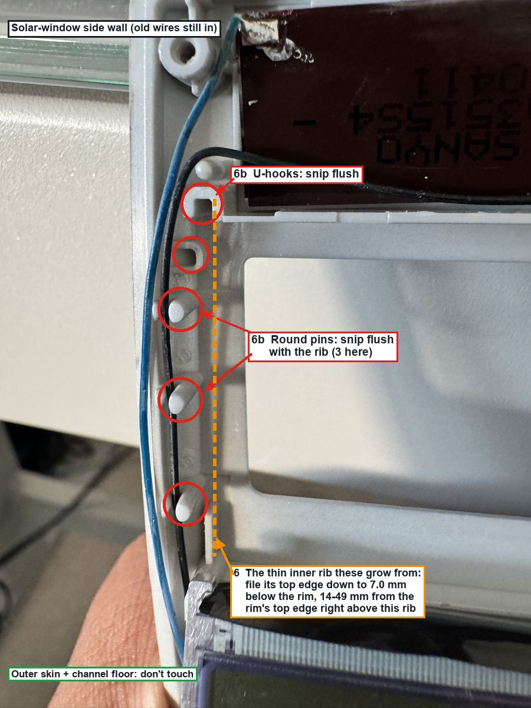
Your solar-side wall: the hooks and pins to snip (red), and the rib that zone 6 files down (orange).
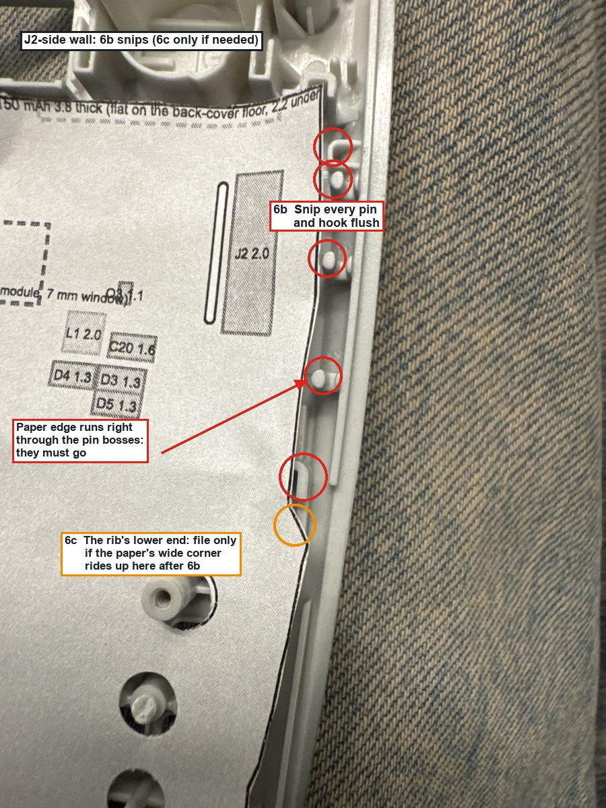
Your J2-side wall: snip everything circled. Orange is zone 6c, only if needed.
Flat face of the cutters against the rib, so the cut is flush. Anything left standing gets a stroke of the file.
After: the rib's face is flat. The rib itself stays.
Steps
Pull out Casio's old solar-cell wires if they are still in the hooks.
Front shell face down. Find the thin inner rib beside the screen opening on each side; the pins and the U-hooks grow from its inner face.
Flush cutters with the flat face against the rib: snip each pin at its root. Same for the three hooks (cut the arm where it meets the rib; the U falls off). Hold a finger over the piece so it doesn't fly off.
Run a needle file along the rib so nothing stands proud; a fingernail drawn along the rib should not catch.
Repeat on the other wall. Count: 6 pins and 6 hooks in the bin. Blow the chips out.
Done when
Both inner ribs are smooth from the top wall down to where the thick wall ends: 6 pins and 6 hooks gone, no stubs.
Common mistakes
Cutters the wrong way round (bevel against the rib): leaves a stub about 0.5 mm long. Flip them.
Twisting the cutters: the rib is thin and can crack. Straight squeeze only.
Forgetting the J2-side wall. Both walls.
Missing the lowest, wider holder (55–58 mm from the top outer edge at that wall).
Zone 6 · front shellneeded
Side-wall relief: 2–2.5 mm off the inner side-wall rib, 14–49 mm from the top (board corner + antenna)
Why (what would hit): on the solar-window side the screen-section side wall is an outer skin, a wire channel and a thin inner rib (the one the three round pins stick out of). Your depth rod (2026-10-06) put the rib's top edge 4.5–5.0 mm below the rim; the board sits 5.5–6.3 mm below the rim, so the rib runs right through where the board goes. Two things on the board reach into it:
the board's own top corner, a strip 14–25 mm from the top outer edge that the board keeps at full width: up to 0.7 mm into the rib;
the ESP32 module's antenna end, a bare 0.8 mm tab that sticks out 4.15 mm past the board's edge 31–47 mm from the top: 0.3 mm into the rib.
Either one stops the board seating. Only the part of the rib between 4.5 and 7 mm below the rim is in the way, so this is a 2–2.5 mm deep notch along the rib, not the whole rib (verification 12).
Where
solar-window side; 14–49 mm from the shell's own top outer edge, measured along that wall from the rim's outer edge right above the rib (board corner 14–26, antenna tab 30–49). That point is about 1 mm lower than the middle of the top end, because the top end curves down towards the corners.
What
the thin inner rib (1 mm), not the outer skin, not the channel floor
Depth
from the rib's top edge (4.5–5 below the rim) down to 7.0 mm below the rim (6.5 is the minimum: the board's far face is at 6.3)
Pins and hooks
gone first (zone 6b), so the file has a clear run
Tools
flat needle file or a small sanding stick; steel ruler across the rim + depth rod to check
Check
the paper template with its yellow tab lies flat; depth rod on the filed rib reads 7.0 everywhere between the marks
Looking down on the solar-side wall (drawn sideways: the top of the calculator is on the left). Red on the rib: the 14–49 mm stretch filed down. Green outline: the board's corner; yellow: the antenna tab.Cut across the wall: the rib's top 2–2.5 mm (red) is where the board edge would be. File it down until the rod reads 7.0.
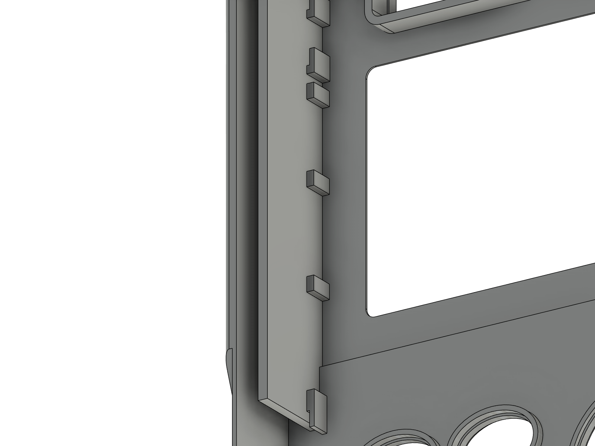
Before: the inner rib of the thick side wall beside the screen (picture from rev F: in your shell its top edge is 4.5–5 mm below the rim, and the pins and hooks sit at board height).
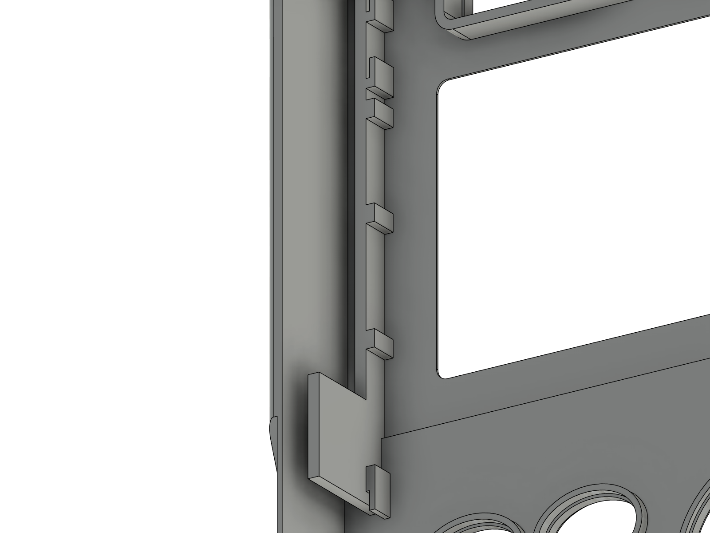
After: the rib notched between the marks down to 7 mm below the rim.
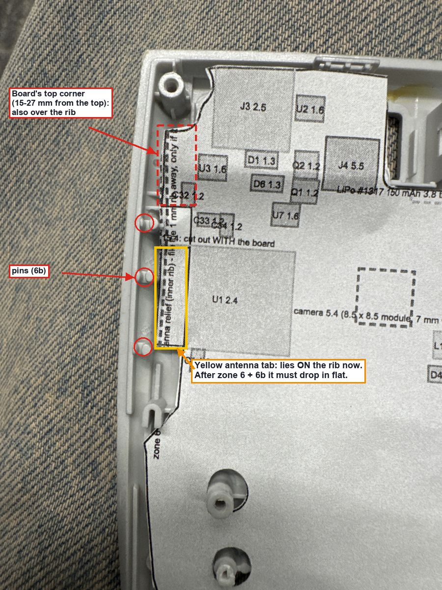
Your paper template before zone 6: the yellow tab and the board's top corner lie on the rib. After zones 6b and 6 they must drop in flat.
Do zone 6b first (pins and hooks off, both walls).
Front shell face down, top end away from you. The solar-window side is on your left now (it is the right-hand side when you use the calculator).
Mark 14 and 49 mm down from the top outer edge on the rim of that wall (zero = the rim's outer edge right above the rib, where the top end curves into this wall). Put tape on the outer skin's rim so a slip only scuffs tape.
depth rod Take a "before" reading on the rib's top edge at 20, 30 and 40 mm (should be about 4.5–5.0, measured your usual way).
File the top edge of the inner rib between the marks. Keep the file flat along the rib and push it only lengthwise; the file can't reach the outer skin if it rides on the rib.
depth rod After every few strokes: read at 15, 20, 25 … 50 mm. Aim for 7.0 everywhere (never less than 6.5).
Don't touch the outer skin (the wall you see from outside) or the wire-channel floor.
Lay the paper template in again: the yellow tab and the top corner beside it must drop in flat. Then the dummy board / real board.
Done when
Between 14 and 49 mm from the top outer edge the depth rod reads 7.0 mm on the rib (6.5 minimum), and the yellow paper tab lies flat on the posts with the rest of the template.
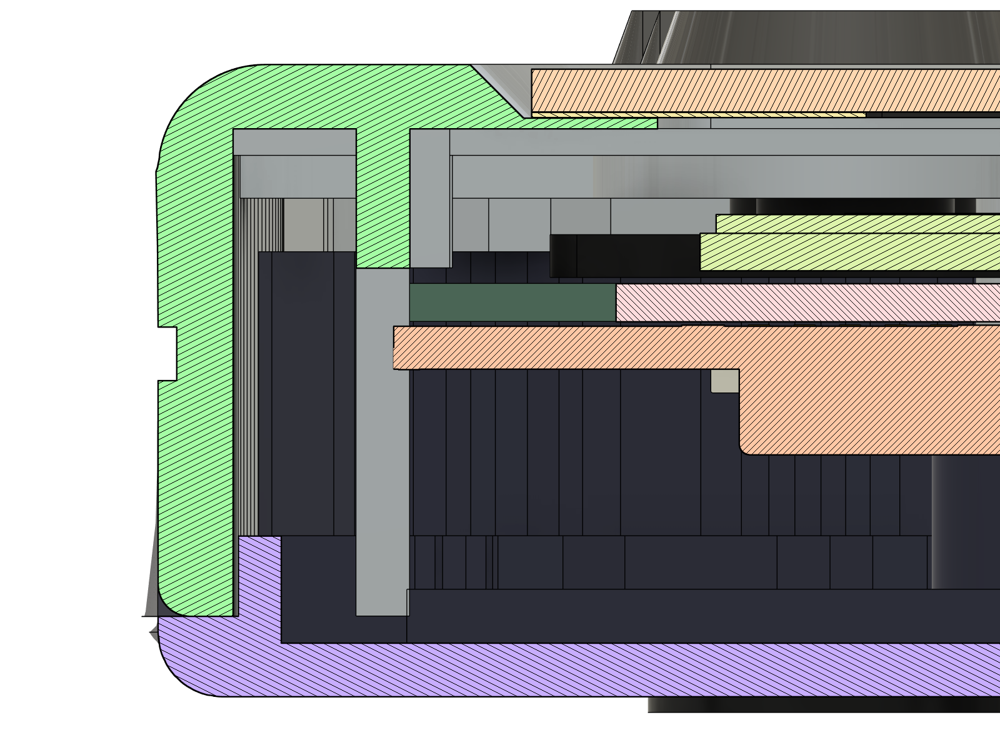
Cut across the antenna tab (0.8 mm, bottom left) and the side wall: without the relief the tab runs 0.3 mm into the inner rib.
Common mistakes
Filing the outer skin instead of the inner rib: the outside of the calculator then shows a dip. Look for the thin rib the pins grew from.
Stopping at 6.0 because "it looks low enough": the board's far face is at 6.3. Measure.
Forgetting the ruler thickness: your 7.0 is then really 6.3. Measure the same way every time.
Using the rotary tool here: the rib is 1 mm thin and snaps or melts. Hand file only.
Filing outside 14–49 mm: the rest of the rib holds the plate. Leave it.
Zone 6c · front shellonly if needed
Lower end of the inner ribs, where the board widens
Why (what might hit): the board goes from 64.75 mm wide (beside the screen) to its full width between 58.5 and 62 mm from the top (all zone 6/6b/6c distances: from the shell's own top outer edge at that wall), with a diagonal on each side. In the model the thick wall (and its inner rib) stops at 57.4 mm from the top; your photo of the J2 side suggests it may run to 59–61. If it does, the end of the rib catches the diagonal by up to 0.9 mm. The paper dry fit tells you: on 2026-10-06 the paper's wide corner on the J2 side did not lie flat beside the lowest hook; zone 6b removes that hook, and this zone is for what is left.
Where
the last 2–3 mm of each inner rib's lower end (55–62 mm from the top outer edge at that wall), whichever side the paper still rides up on
Depth
down to 7.0 mm below the rim, like zone 6
Decides it
after 6b: the paper template's wide corners both lie flat, skip. One rides up: file that side.
Tools
flat needle file
Top view at the rib's lower end. The orange-circled spot is where the board's diagonal crosses the rib line.
After 6b (and 6), lay the paper template in. Look at both wide corners (where the board's outline steps out, about 59–62 mm from the top).
Both flat? Skip this zone. One rides up? Mark the end of the rib under it.
File the rib's end back 2–3 mm and down. depth rod7.0 below the rim, like zone 6.
Paper in again, then the dummy board. Repeat in small steps until the corner drops.
Done when
Both wide corners of the paper (and then the dummy board) lie flat with every post in its hole.
Common mistakes
Doing it "just in case" on both sides: only file where the paper rides up.
Filing the outer skin at the corner: it's the inner rib's end you want.
v15-LCD board: what's different
Same zones, same numbers. The v15-LCD board (ER-TFT019-1 panel) fits the ground shell with no new grind, and no grind can be skipped (hardware/enclosure/final_assembly_v15_lcd/REPORT.md). Two things to know:
1. Rib B and the LCD tail's bow
The LCD's flex tail goes down through the slot and makes one U-bow under the board before it goes up into J5. The bottom of that bow passes 0.25 mm over the part of rib B you don't grind (nominal 36.6 mm tail). Each 0.3 mm of extra tail drops the bow 0.15 mm.
The tail's bow over rib B. A light touch is harmless.
Measure the tail in assembly step 4. Up to 37.0 mm is fine.
If a tail measures over about 37 mm, or the step-10 marker dot shows the bow squeezed by the closed cover: grind zone 2 about 15 mm further towards the slot side, at the same depth (flush with the floor). With the cover inside up and its top end away, the slot side is the left side (the solar box is top right). The bow's lowest point sits about 30 mm left of the centre line: make sure the flat part covers the spot the marker dot shows.
Don't fold the tail tighter instead; sharper corners don't fit either.
2. DCXYX camera: keep the S-fold bay clear
If the build uses the DCXYX OV5640-AF camera (longer ribbon), the recommended route keeps the camera and the 7 mm window where they are and tucks the extra ribbon into one S-fold (bend radius 1.2 mm) in the bay between rib C and the small ring on the back cover (KiCad y 108–116, x 147–153: about 51–59 mm from the back cover's own top outer edge, within about 3 mm of the centre line). The ribbon passes only 0.44 mm over the floor there and 0.53 mm under the small ring's top (variant_camera_dcxyx/results.json).
The S-fold in the bay. Nothing may stand on that floor.
Don't grind there (it isn't needed), and don't leave dust, chips, tape, labels or epoxy repairs on that floor.
Leave rib C and the small ring alone: they set the bay.
If you had to patch the floor near there, sand the patch flush with the depth rod (F = R).
Test fit
1. Paper template
Lay the cut-out grind maps back in each half (cut the front-shell one out with its yellow antenna tab). Every red zone you meant to grind should now sit over bare floor (or the notch), and the antenna tab must lie flat beside the side wall. The green LR44 cup stays.
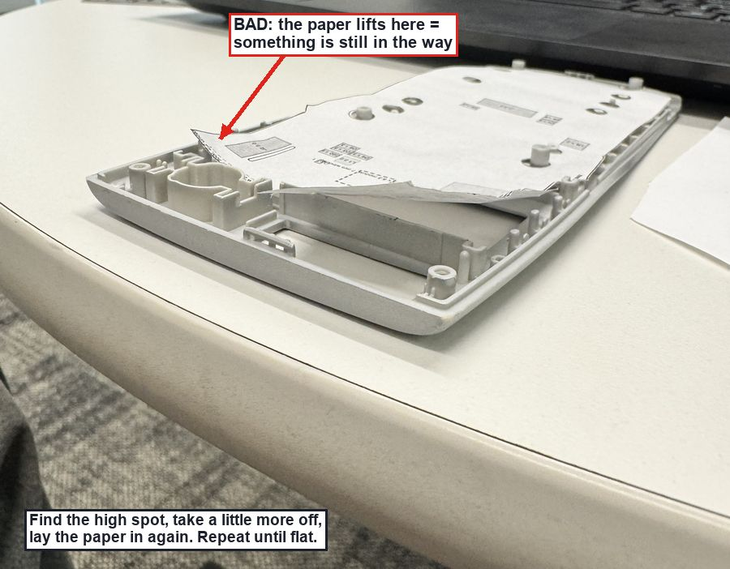
Not flat yet: something still stands in the way where the paper lifts.
2. Dummy board (3D print)
hardware/fitcheck/dummy_board.stl is the whole board at real size with every part at its real height, a 12 × 12 × 5.4 mm camera block and a battery block as a separate piece (regenerated 2026-10-06: the loose block is now the 26 × 19.75 × 3.8 mm #1317 at its back-cover-floor spot, and the ESP32 antenna tab is on the dummy because it is part of the module's 3D model). Tallest point: 5.5 mm (J4). Print flat, parts up, 0.2 mm layers, no supports.
Colour the tops of the ribs (and the ground areas) with marker.
Press the dummy in, put the battery piece on the back-cover floor (its new place), close the back cover gently. Don't force it.
Open it. Any marker on the dummy shows a rib that touches. Mark that spot on the shell, take it down a little more, test again.
3. Real board (when it arrives)
Fit the board alone first. If it binds on locating post H6, file the board's hole slightly towards the top of the board, not the post.
Camera: Kapton on the board, thin tape (≤ 0.1 mm) under the module, centred under the window. Look through the hole: you should see the lens in the middle.
LiPo flat on the back-cover floor, held with thin (0.1 mm) tape underneath, nothing on top (only 0.3 mm under the coin-cell cup). Its leads plug into J4 at J4's level, under the board.
Camera ribbon: there is little spare (the 3D path needs 58.7 mm from the module's near edge into J1; a nominal 70.5 mm ribbon measured from the module's far edge leaves about 1.4–3.3 mm), so lay it flat and straight into J1. Don't let it sag over the mid rib. If your ribbon measures under about 70.3 mm, the camera moves up to 1.7 mm towards J1 and the window is drilled over the lens (Assembly Guide step 6).
Close the case with the screws snug, not tight. It should close fully without a gap at the rim.
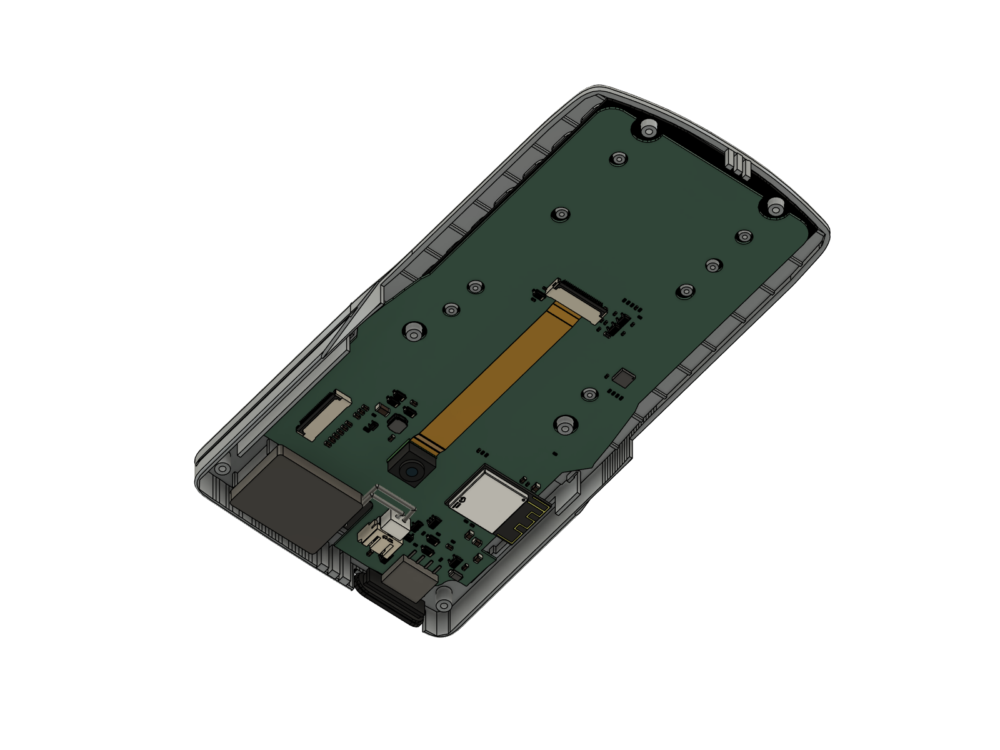
Back cover off: where the board, camera, LiPo, J4 plug and magnet end up.
Test-fit checklist
Tick as you go. Ticks are saved on this phone only.
Final checklist
Tick as you go. Ticks are saved on this phone only.
Troubleshooting (and if you went too far)
What happened
Why
Fix
Ground too deep: thin spot or small dip in the floor (still solid)
Pressed into the floor, or kept going past F = R
Fill with 2-part epoxy or plastic filler from the inside, let it cure fully, sand flat to the floor. depth rod F = R again: a bump here can hit J4 or the v15 camera ribbon.
Hole through the floor
Same, further
Kapton or a thin plastic patch on the outside, epoxy over it from the inside, sand flat. If it's near J4 or the camera, use the spare shell instead.
Cracked wall or rib
Clamped too hard, twisted the cutters, or the burr grabbed
Thin super glue (cyanoacrylate) wicked into the crack, or epoxy on the inside; sand flush. A crack through an outer wall or a screw post: use the spare shell.
Plastic melted and smeared, or a blob on the bit
Too fast (above ~10,000 RPM) or pressing too hard
Let it cool fully, cut the blobs off with a sharp knife, then sand at lower speed. Clean the burr with a brass brush.
Rough, fuzzy or hairy edges
Normal for ABS; worse with a coarse drum
Scrape with a sharp blade held upright, or a few strokes of a fine needle file. Don't use the rotary tool on fuzz: it melts it.
A ridge or stub you can feel
Stopped just short, or the drum's edge rode on the floor
Sanding block held flat, a few strokes. depth rod again.
Burr skates or jumps
Tip used instead of the side; too little speed for the bit
Hold at 30–45° and use the side; take lighter passes.
Depth readings jump around
Dust under the rod, ruler not flat on the rim, calipers tilted
Blow the dust off, press the ruler flat on both rims, take 3 readings and use the middle one.
Magnet notch too wide
Cut to the line with the burr
The glue fills small gaps. If it's more than about a millimetre, build the side up with epoxy and file it back.
Notch too deep
Didn't check the depth at both ends
Fine for fitting; fill the gap under the magnet with glue when you glue it in.
Camera hole off-centre or too big
No pilot, or the bit wandered
Move the camera module to sit under the hole (it's held by tape). If it's badly off, use the spare back cover.
Paper template still rides up
A pin stub, a hook, the rib or its end still in the way
Find the high spot (look from the side at eye level), take a little more off, try again (6b stubs, zone 6 depth, 6c).
Marker from the ribs on the dummy board
A rib or stub touches the board
Mark that spot on the shell, take it down a little, test again.
Cover won't close / gap at the rim
Lip (5b) still there, a stub under J4, or the magnet sitting proud
Close it without the magnet to find out which, then fix that zone.
Nicked a post, clip or the outer wall
Slip of the tool
Stop. A small nick can be epoxied. A cracked or broken screw post: use the spare shell.
Remember
You have a spare shell. A mistake costs you a shell, not the project.
Sources: hardware/enclosure/final_assembly/assembly_report.md, hardware/verification/07_final_review_fitment.md, hardware/verification/12_rib_pin_recheck.md, hardware/enclosure/jigs/README.md, hardware/enclosure/final_assembly_v15_lcd/REPORT.md, hardware/enclosure/final_assembly_v15_lcd/variant_camera_dcxyx/results.json, hardware/stage13_heights.md, hardware/fitcheck/, hardware/measurements_2026-10-03.md. Distances marked "from the model" come from the CAD replica: always confirm them with the printed template before cutting. Diagrams are schematic (grind_diagrams.py); photo marks are approximate (annotate_grind_photos.py). Speeds are general rotary-tool advice. Linked: First Power-Up Guide · Calculator Assembly Guide · entry point hardware/FINAL_STATUS.md.